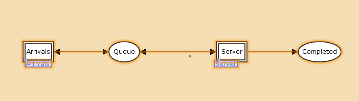
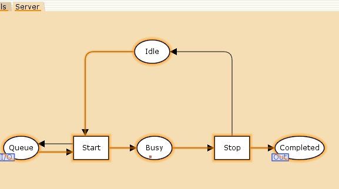
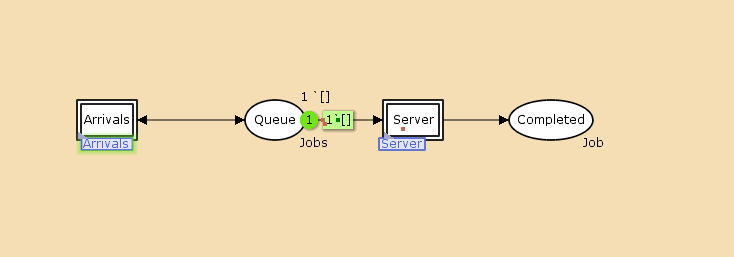
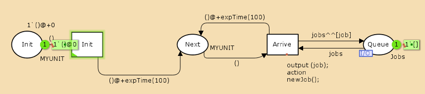
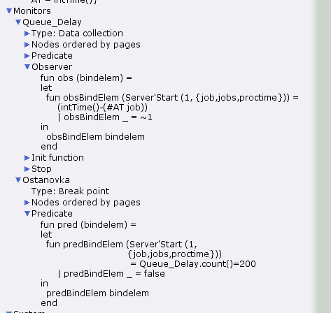
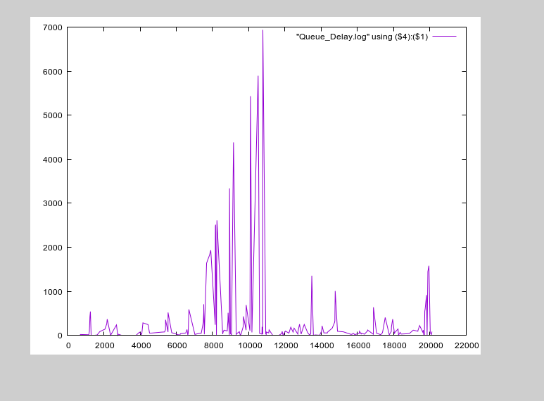
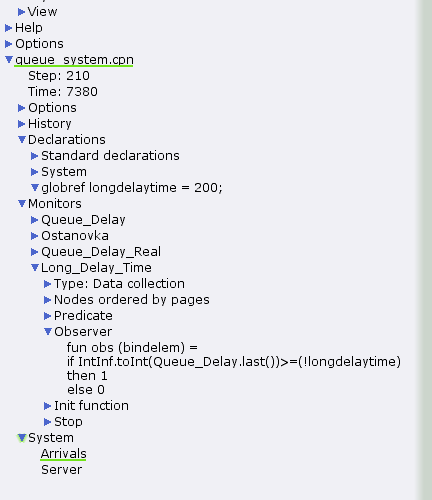

- Извекова Мария Петровна
- студентка 3-го курса
- Российский университет дружбы народов
- 1132226460@pfur.ru

Реализовать модель M|M|1 в CPN tools.









#!/usr/bin/gnuplot -persist
set encoding utf8
set term pngcairo font "Helvetica,9"
set out 'win_1.png'
plot "Queue_Delay.log" using ($4):($1) with lines




#!/usr/bin/gnuplot -persist
set encoding utf8
set term pngcairo font "Helvetica,9"
set out 'win_3.png'
set style line 2
plot [0:] [0:1.2] "Long_Delay_Time.log" using ($4):($1) with lines
В процессе выполнения данной лабораторной работы я реализовала модель системы массового обслуживания M|M|1 в CPN Tools.